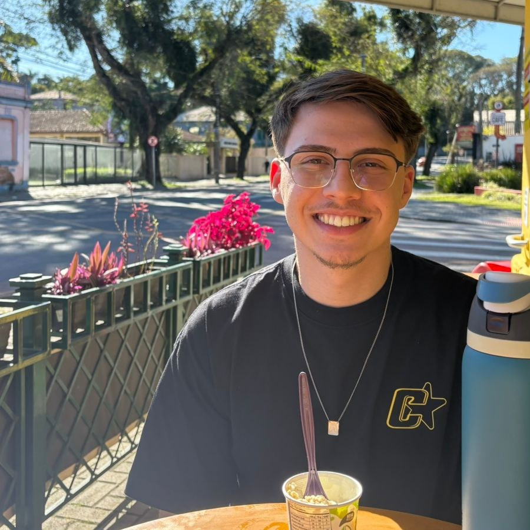
curiosidades
primeiramente, é um prazer te ver aqui :)
- cafeteria nova é meu programa preferido, sempre tem uma na lista esperando
- suits é a série pra qual eu sempre volto
- planejo muito o futuro, mas tento não esquecer de viver o presente
- sou fã do "bora, vamos testar", prefiro descobrir fazendo do que ficar imaginando
- gosto de boas histórias, lá que saem as melhores ideias
- futebol, boxe e corrida são o que me tiram da frente da tela
experiência
Atuo no back-end com Java, em produtos de saúde e odontologia, autoatendimento financeiro e suporte ao consumidor via WhatsApp.
No dia a dia, desenvolvo features e APIs em Spring Boot, dou sustentação a sistemas em produção e ajudo a padronizar a documentação com Swagger entre os times.
projetos
um pouco do que construí fora do trabalho, entre projetos pessoais e da faculdade


Chrono
Sistema em Java Spring Boot e Angular para lançar e gerenciar horas em projetos, com dashboard, relatórios e controle de usuários e atividades. Feito sozinho, do backend ao front, incluindo o deploy - API na Heroku e front na Vercel.
ir para o githubAgiota Bank
Simulador de banco digital com API REST em Spring Boot e app mobile em Kotlin, com autenticação JWT, transferências via PIX, gerenciamento de chaves e notificações por e-mail. Projeto em equipe: trabalhei no backend e ajudei no design do app, que o resto do time implementou.
ir para o github


Repz
Sistema de gestão para academias, com controle de acesso por perfil, fichas de treino, avaliações físicas e check-in de frequência. Arquitetei o backend em camadas - controller, service e persistência. O front saiu de um desenho meu, ajuda do Lovable e foi implementado com apoio de IA. Projeto em grupo na faculdade.
ir para o githubNetworker
Chat em tempo real com Spring Boot e WebSocket, é um servidor TCP pra testar broadcast na prática. Fiz sozinho, por curiosidade, enquanto cursava a materia de Redes, com apoio do Copilot na IDE e do GPT.
ir para o github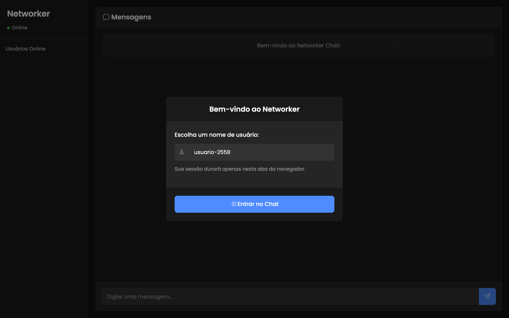
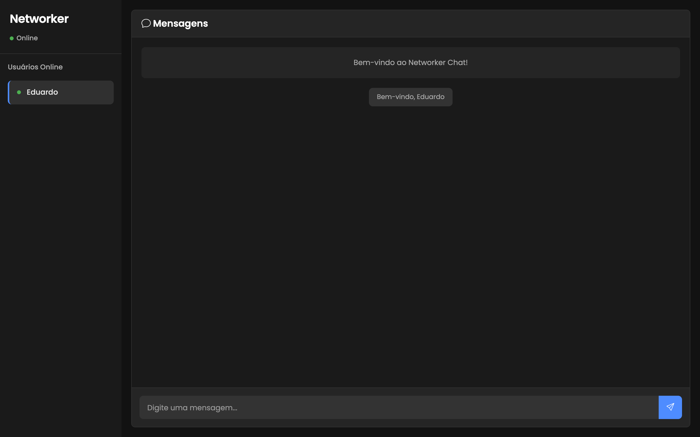
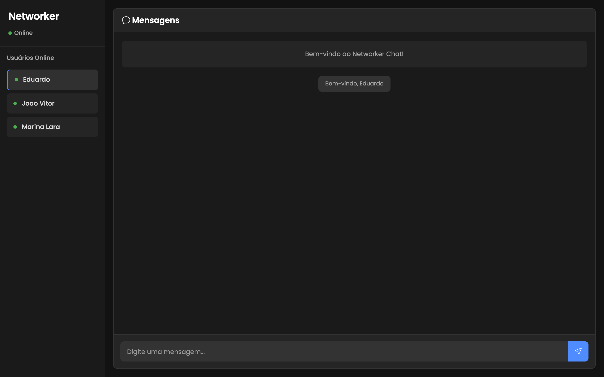
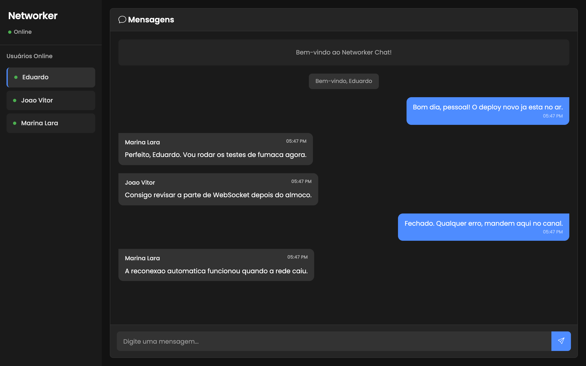
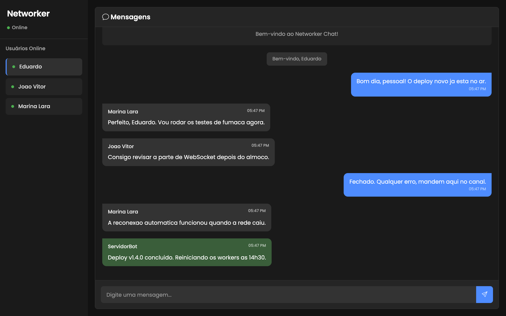
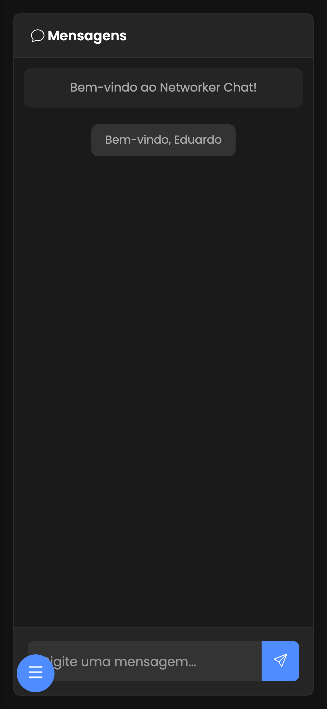
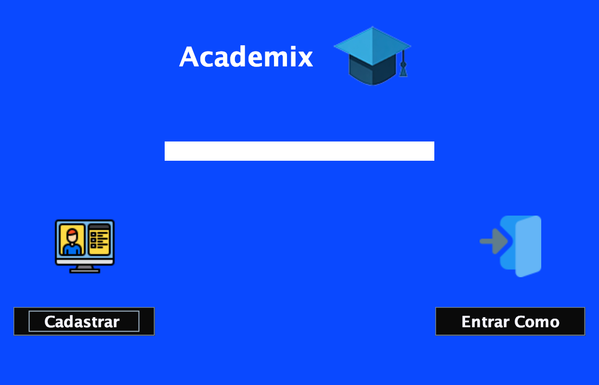
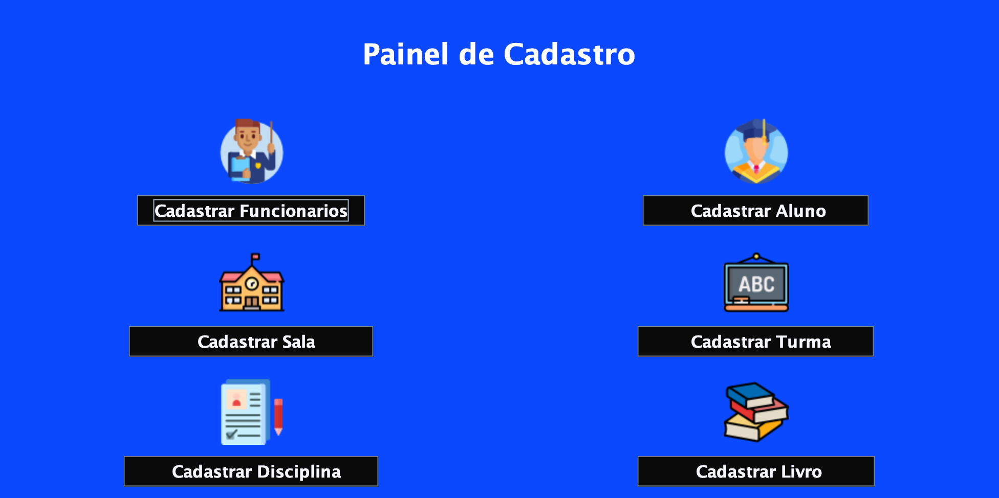
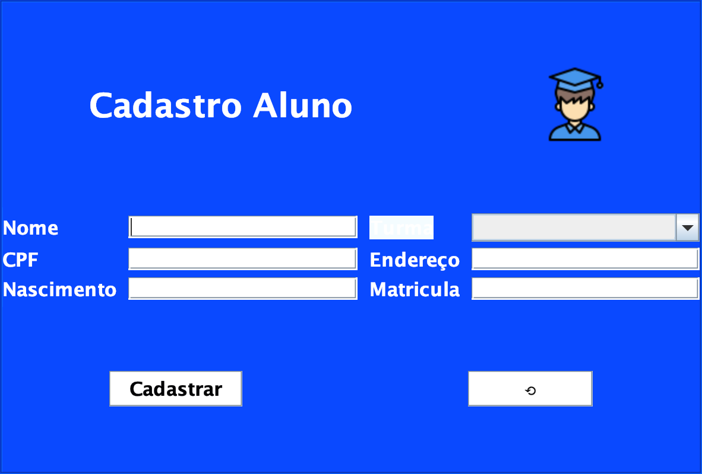
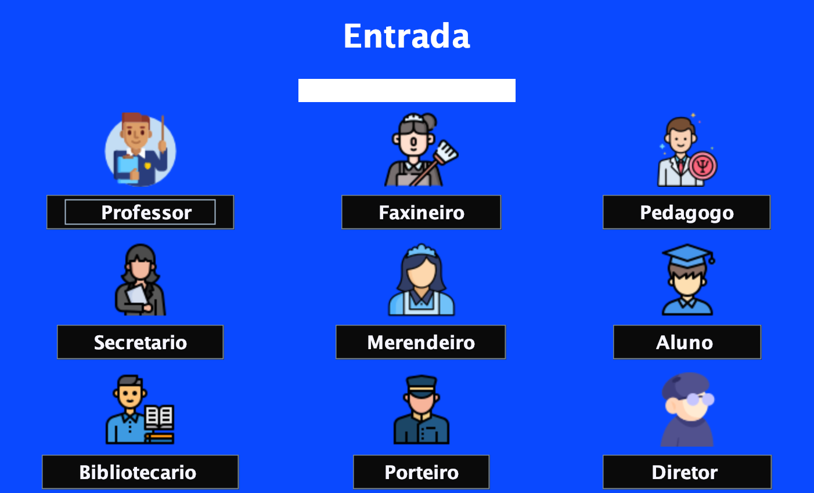
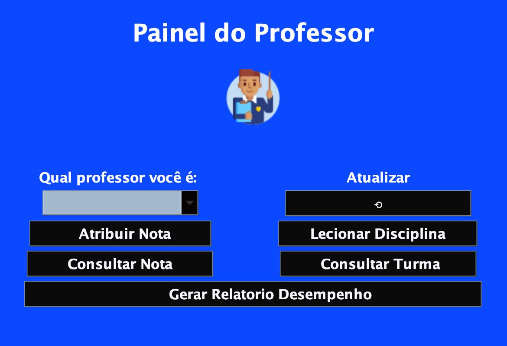
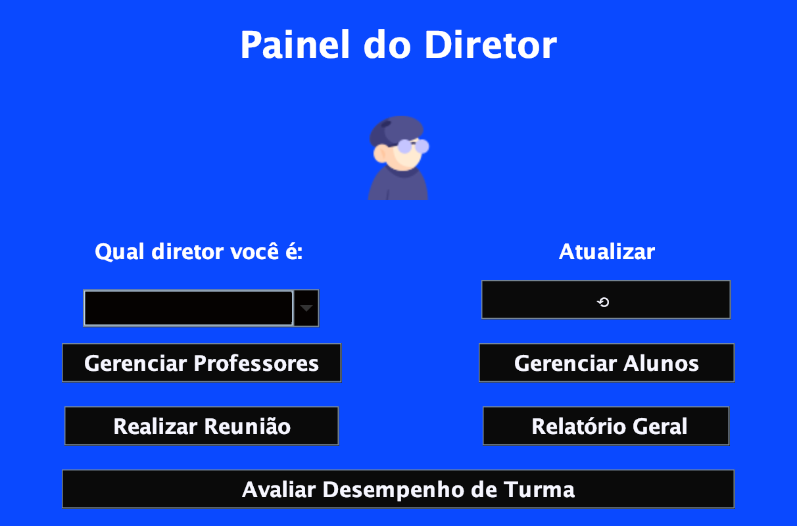
Academix
Aplicação desktop de gestão escolar em Java e Swing, feita em grupo pra treinar os princípios de POO. Fiquei responsável por toda a interface Swing e ajudei no Java. Nem tudo está 100% - é projeto de estudo.
ir para o githubpdfs gerados com apoio de ia
perguntas frequentes
o que costumam me perguntar quando a conversa sai do currículo
Sou de Curitiba, mas nem sempre morei aqui: passei boa parte da vida em Blumenau e um tempo em Balneário Camboriú antes de voltar pro Paraná.
No dia a dia uso Java e Spring Boot no back-end e Angular no front-end. Também trabalho com SQL e PostgreSQL.
Construindo. Prefiro pegar uma ideia e transformar em projeto de verdade, foi assim com o Chrono, o Repz e o Agiota Bank, o que é só assistir aula sem colocar a mão no código.
Gosto de desacelerar em lugares tranquilos, como cafeterias e praia, e de maratonar um bom filme pra desligar a cabeça.
Eu gosto de criar produtos que tenham algum valor para alguém, o que mais faz sentido pra mim é ver alguém usando uma solução que eu ajudei a ter a ideia e até implementar, sou apaixonado na criação de produtos.
se você quer trocar uma ideia, falar de uma vaga ou tirar um projeto do papel, me manda uma mensagem
redes sociais